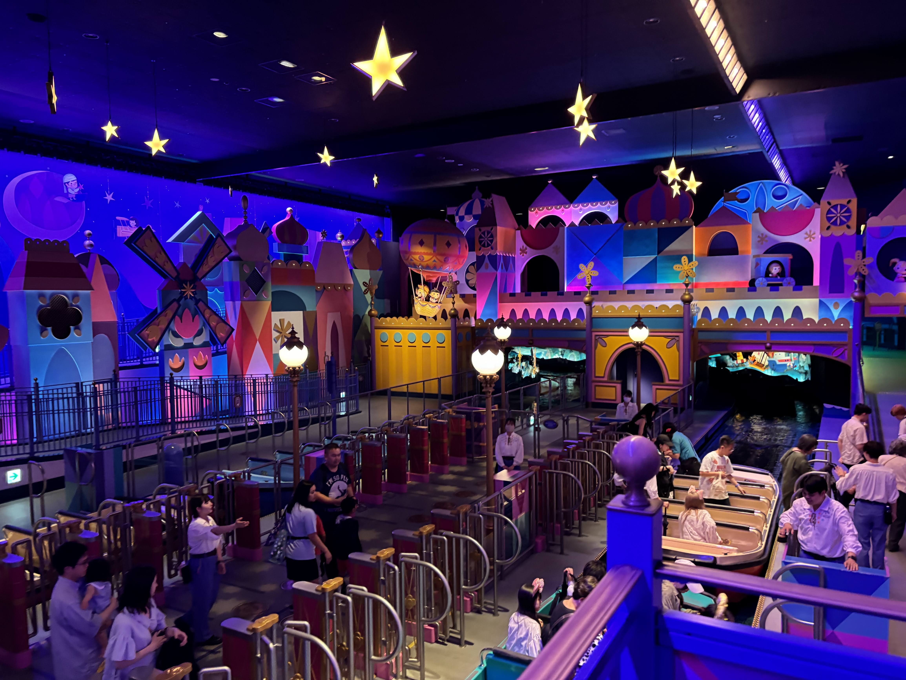
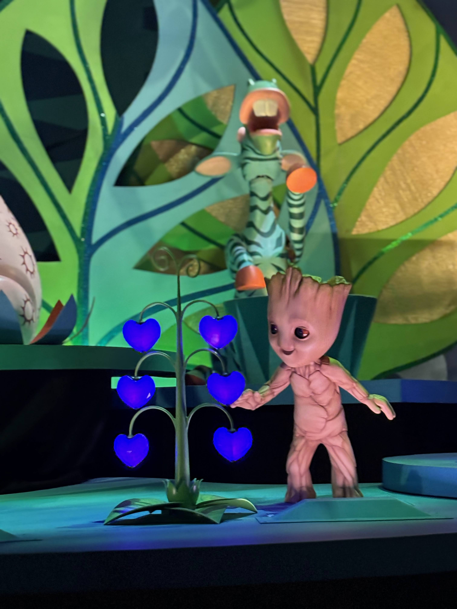
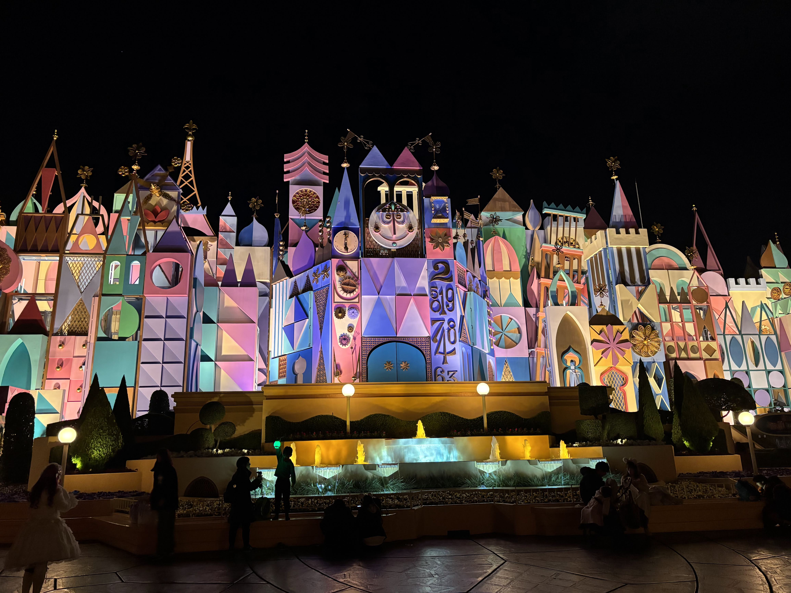

It's a Small World
世界を繋ぐ平和の賛歌とイマジニアたちの純粋なる情熱
I. Core Philosophy — 平和への願いと3つの基本理念
みなさんは「イッツ・ア・スモールワールド」を訪れたとき、どんなことを感じますか？ 単なる子供向けの親しみやすいライドアトラクションのようにも見えますが、その穏やかな水流と愛らしい歌声の根底には、ディズニーが紡ぐ非常に強い平和へのメッセージと、人間への深い賛歌が静かに息づいているのです。
① 人形たちの「同じ顔」に込められた意味
アトラクションに登場する何百体もの子供の人形たち。よく観察してみると、実はすべて全く同じひとつの顔の造形で作られていることに気づくでしょうか。これは彫刻家ブレイン・ギブソンによる意図的なデザイン。「人種、国籍、生まれた国がどこであっても、子供たちはみな同じ人間であり、等しく尊い存在である」という強い平等性の象徴です。あえて個々の顔の個性を排することで、隔たりのない普遍的な一体感を、物言わぬ表情の中に宿しています。
② 純粋無垢な視点がつくる「子供たちだけの世界」
気づいた方もいるかもしれませんが、この幸福な世界には、ディズニーキャラクターを除いて「大人の人間」が一切登場しません。登場するのは、子供たちと動物たちだけ。これは、偏見や憎しみのない「純粋無垢な視点」のみで世界を見つめ直してほしいという、イマジニアたちからの静かな語りかけなのかもしれません。未来の平和を築き上げていく主役は、いつだって純真な子供たちであることを私たちに伝えてくれています。

③ 運河を照らし続ける「太陽」の演出
ボートに乗って世界中を旅していると、ヨーロッパ、アジア、アフリカなど、どんな部屋に行っても、必ずその地域ごとの「太陽」が象徴的に描かれていることに気づきます。「私たちがどこにいても、同じ一つの太陽の下でみんな一緒に生きている（＝世界は一つ）」という事実を、旅の最初から最後まで、絶え間ない温かい光で優しく照らし続けているのです。
II. Genesis of the Anthem — 楽譜とメロディに込められた劇的転換
アトラクション内を包み込む不朽の名曲。この音楽が誕生するまでの歩みには、時代に抗う強い情熱と、劇的なメロディの転換劇が刻まれていました。
1964年ニューヨーク世界博覧会での産声
この小さな世界の誕生は、1964年に開催された「ニューヨーク世界博覧会」にまで遡ります。ユニセフ（国連児童基金）パビリオンの主役となる展示として、ペプシコ社の出資のもと、ウォルト・ディズニー自らが制作を手掛けたのが始まりでした。世界の平和を祈念する壮大な歴史の記念碑として、パビリオン全体が設計されたのです。
厳粛な「賛歌」から軽快な「ポップス」へのテンポアップ
この曲を手掛けたのは、映画『メリー・ポピンズ』の音楽でもおなじみのロバート・B・シャーマンとリチャード・M・シャーマンの兄弟です。ウォルトから直々に「世界を一つにするシンプルな歌を作ってくれ」という使命を受け、彼らは制作に臨みました。
当初、シャーマン兄弟が書き上げたメロディは、テンポが非常に遅く、伴奏もない、まるで厳粛な賛歌（バラード）のような厳かさを湛えていました。当時、世界が「キューバ危機」などの冷戦の極度の緊張状態に置かれていたことを反映し、厳粛な「平和への祈り」を表現しようとしていたためです。
しかし、試作を聴いたウォルト・ディズニーは、その平和のメッセージを認めつつも、次のように言葉を彼らに返しました。
このウォルトの先見の明に満ちた一言により、曲は劇的にテンポアップ。現代の誰もが知る、異なるパートの旋律が美しく重なり合って一つの曲へと溶け合う、心躍る「輪唱（カウンタフォニー：対位法）」のスタイルへと生まれ変わったのです。

このシンプルで親しみやすい合唱曲は、音楽史において、ラジオ、テレビ、そしてパーク内を含め「地球上で最も多く演奏（再生）された楽曲」として米TIME誌などに認定されるほどの功績を残すことになりました。
III. Masters of Creation — 平和を具現化した4人のイマジニア
この世界観を構築するため、ウォルトの元に集ったイマジニアたち。各ポートレートをタップすることで、彼らがそれぞれの分野で発揮した細やかなこだわりと確かな足跡を覗くことができます。
IV. Cosmic Friendship — 「グルート」のバカンスと地球の絆
小さな世界が紡ぐ平和のメッセージは、地球という国境を越えるだけでなく、ときには銀河の彼方をも結びつけてしまうようです。東京ディズニーランドの運河にて、現在特別な体験プログラムとして開催されている『イッツ・ア・スモールワールド with グルート』も、そんな素敵な出会いの一つですね。
映画『ガーディアンズ・オブ・ギャラクシー』シリーズに登場する、愛らしくも勇敢な樹木型宇宙人「グルート」。彼は、銀河の仲間たちと共に地球へバカンスを過ごしにやってきました。世界中の子供たちの歌声や、異国情緒あふれる美しい伝統文化に触れながら、世界各地の地域を巡る幸福な旅の記録です。

メアリー・ブレアのタッチで描かれたスーパーヒーローたち
この特別な体験の中では、グルートの相棒であるロケット、マンティス、ガモーラ、ハルク、さらにはドクター・ストレンジ、ブラックパンサーといったマーベル・スタジオのヒーローたちが、すべてメアリー・ブレア独自の愛らしいデフォルメ・ドール（人形）となって、世界の子供たちに囲まれ、共に歌を口ずさんでいます。
例えば、アフリカの星空の下で現地のキリンと並び、淡く輝く青いハートの熱帯植物に見惚れているグルートや、南極でキャプテン・アメリカの強固なシールド（盾）に乗って楽しそうにそり遊びをする姿が確認できます。アトラクション本来の「私たちは一つ」というテーマと、異なる星々を越えて響き合う「宇宙的な友情」が幸福に融け合い、時空を超えた文化の架け橋が今日も静かに流れています。
V. Global Footsteps — 世界に拡がる幸せな航路とファサードの造形美
世界中のディズニーパークへと巡らされているこの平和の運河。実は各地のパークを訪れてみると、その気候や建築の美学に基づいて、少しずつ異なる表情を見せてくれるのを知っていますか？ その背景には、イマジニアたちの細やかなデザインへのこだわりが詰め込まれています。
ファサードを彩るモザイク状のデザイン
アトラクションの外観（ファサード）は、メアリー・ブレアとローリー・クランプによるミッドセンチュリー・モダンの代表作とも言えるデザインです。エッフェル塔、ピサの斜塔、タジ・マハルといった世界的なランドマークが、平面的な幾何学模様（三角形や四角形など）に抽象化され、一つの巨大な「調和されたモザイクの街並み」として美しく組み立てられています。さらに、15分ごとに中央の「からくり時計」が作動すると、時計の顔が左右にスライドし、おもちゃの兵隊たちと世界の子どもたちの人形が音楽に合わせてパレードを行います。これは「世界のすべての国において、時の流れは等しく平等に訪れる」という調和の意味を示す、極めて象徴的な構造物なのです。

ホワイト・ルーム（フィナーレ）に隠された「光の統合」
旅の最後に訪れる、一面が純白の「ホワイト・ルーム」。各テーマの部屋では、緑や青、暖色といった地域ごとの固有の色彩が主役を務めていましたが、最終部屋であるこの空間では、それらがすべて「白と金」の2色へと統合されます。色彩学において、あらゆる色（光）を重ね合わせて混ぜ合わせると「真っ白な光」へと還元されるように、多種多様な文化や国籍が手を取り合い、すべてが一つに融け合う調和の状態を、目の前に広がる純白の光の中で表現しているのです。
アナハイムのパステル調のファサードから、フロリダ版の「純白と金」による屋内ファサード（太陽光による退色を防ぎつつ、光の統合を表現する美学）まで、各地の気候に合わせながらも一貫して同じメッセージが世界中で航行し続けています。